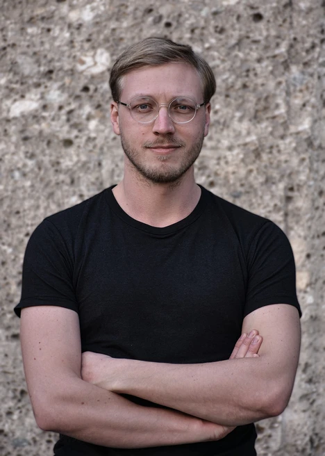

Tizian Rein (*1997 in Rhöndorf) studierte Architektur an der Technischen Universität München, der ETH Zürich und der Technischen Hochschule Köln. Nach seinem Bachelorabschluss und seiner Tätigkeit im Atelier Max & Jakob Giese wandte er sich im Master-Studium technisch-forschenden Feldern zu, die computergestützte Prozesse mit Denkmalpflege verbinden. Diese Interessen verfolgte er zudem als wissenschaftliche Hilfskraft an der Professur für Digitale Fabrikation in München und bei Gramazio Kohler Research an der ETH Zürich. Seine Masterarbeit From Structure to Action: Machine Reasoning and the Logics of Repair (2025) untersucht, wie digitale Entwurfsprozesse Konzepte der Reparatur und Kontinuität aufgreifen können. Derzeit ist er Doktorand an der Professur für Digital Fabrication innerhalb des Munich Institute for Robotics and Machine Intelligence (MIRMI) sowie am MIT (USA). In seiner Arbeit erforscht er, wie computergestützte Methoden und KI tief in das Handwerk und die Erhaltung von Gebäuden eingebettet werden können. Parallel zu seiner Forschung arbeitet er in selbstständiger Praxis an der Weiterentwicklung und Reprogrammierung im Bestand.
Ausbildung
- 2022–2025TU München, Architektur M.A. / Mentorenprogramm Computational Methods, Abschluss mit Auszeichnung
- 2023–2024ETH Zürich, Architektur Masterstudiengang / Stipendiat
- 2018–2021TH Köln, Architektur B.A.
Mitgliedschaften
- seit 2026Deutscher Werkbund München
- seit 2026initiative.umbau Köln
- seit 2025Rheinischer Verein für Denkmalpflege und Landschaftsschutz
- seit 2022Verein Gutenberghaus Bad Honnef e.V.
- seit 2022Rhöndorfer Bürger- und Ortsverein
Erfahrung
- seit 2026Wissenschaftlicher Mitarbeiter / Professur für Digital Fabrication, TU München, im Munich Institute for Robotics and Machine Intelligence (MIRMI) und am MIT CSAIL, USA
- seit 2026Junior-Architekt AKNW / freischaffende planerische Tätigkeit in Bad Honnef und München
- 2023–2026Wissenschaftliche Hilfskraft / Professur für Digitale Fabrikation, TU München
- 2023–2024Wissenschaftliche Hilfskraft / Gramazio Kohler Research, ITA, ETH Zürich
- 2021–2022Projektassistenz / Atelier Max & Jakob Giese, Gehlert
- 2020–2021Studentischer Prodekan Architektur / gewählter Vertreter an der TH Köln
- 2019–2021Tutor für Entwurf und Konstruktion / Prof. Carola Wiese
- seit 2016Selbstständige Tätigkeit / 3D-Druck und Design
Lehre
- 2026Renovierung Fritz-Pflaum-Hütte / Masterstudio, Professur für Digitale Fabrikation, TU München, in Zusammenarbeit mit der Professur für Architektur und Human Augmentation, ETH Zürich, mit Prof. Kathrin Dörfler und Prof. Daniela Mitterberger, arc.ed.tum.de
- 2026Actionable Repair / Workshop, ROB|ARCH 2026, Aarhus, mit Begüm Saral und Dr. Avishek Das, robarch2026.org
- 2026Actionable Repair via Multimodal AI / Workshop, Future of Construction Symposium, ETH Zürich, mit Laurence Crouzet, Adrian Pöllinger, Begüm Saral und Wen-Shan Cui, futureofconstruction.ethz.ch
Publikationen / Vorträge
- 2026Translating intention: AI-assisted model generation for collaborative human–robot construction / mit Avishek Das, Begüm Saral, Lidia Atanasova und Kathrin Dörfler, in Construction Robotics, DOI 10.1007/s41693-026-00205-0
- 2025The Architect as Toolmaker: AI as Instrument in Architectural Repair / Future(s) of Educational Design Symposia, Center of Educational Technologies, TU München
- 2025From Structure to Action: Machine Reasoning and the Logics of Repair / Masterthesis, TUM School of Engineering and Design, publiziert via mediaTUM
- 2025From Prototype to Product: Start-ups and Intellectual Property in Digital Fabrication / mit Marcel Studer und Dominik Reisach, ITA (Prof. Silke Langenberg), Startup Architecture Symposium, ETH Zürich
- 2025From Material to Market: How Materiality Drives Innovation in Architectural Technologies / mit Marcel Studer und Dominik Reisach, ITA (Prof. Silke Langenberg), Architecture & Patents Conference, ETH Zürich
- 2024Die Neue Kapelle auf dem Waldfriedhof / eingeladener Vortrag, Bürgerhaus Rhöndorf
- 2024Den Erhalt der Kapelle unterstützen / Gastbeitrag, Honnef Heute
- 2022Die Waldfriedhofskapelle in Rhöndorf / ISBN 978-3-00-071896-0
mail@tizianrein.de · München / Bad Honnef
Umbau und Neuordnung eines freistehenden Wohnhauses in Bonn aus dem Jahr 1958. Der bestehende Grundriss wird überarbeitet, Bad und Küche werden neu angeordnet und an die heutige Nutzung angepasst. Durch das Abtrennen und den Ausbau der ehemaligen Waschküche und der Abstellräume entsteht im Untergeschoss eine eigenständige Wohneinheit mit separatem Eingang. Wenige, gezielte Eingriffe in den Bestand schaffen so eine zweite, vollwertige Wohnung, ohne den Charakter des Hauses zu überformen.
Diese Masterarbeit fragt, wie künstliche Intelligenz zur architektonischen Reparatur als systematischer und zugleich kreativer Entwurfspraxis beitragen kann. Sie entwickelt ein multimodales Framework, das unstrukturierte Informationen über ein beschädigtes Objekt [Fotos, Skizzen, Notizen, Messungen] in strukturierte, fabrizierbare Entwurfsentscheidungen überführt. Anhand zehn geretteter Stapelstühle wird gezeigt, wie menschliche Expertise und maschinelles Schließen zusammenwirken, um aus einem einzelnen Schadensfall eine situierte, herstellbare Reparaturantwort abzuleiten.
Eine fortlaufende Forschungs- und künstlerisch-aktivistische Auseinandersetzung mit der Waldfriedhofskapelle in Rhöndorf, einem feinen Beispiel sakraler Nachkriegsarchitektur. Die Arbeit dokumentiert den Bau, ordnet ihn baugeschichtlich ein und macht seinen kulturellen Wert öffentlich sichtbar. 2024 wurde ein Abrissantrag der Stadtverwaltung nach öffentlicher Besorgnis und erneuter Diskussion über die Bedeutung des Bauwerks zurückgezogen. Ein Beleg dafür, wie sorgfältige Vermittlung den Erhalt eines bedrohten Gebäudes mittragen kann.


Sanierung und Innenausbau einer Wohnung in einem Haus der Nachkriegszeit. Aus einem kompakten, in die Jahre gekommenen Grundriss werden mit wenigen, präzisen Eingriffen neue Beziehungen zwischen den Räumen geschaffen sowie zu Balkon und Garten. Oberflächen, Einbauten und Licht werden so überarbeitet, dass die ursprünglichen Qualitäten der Wohnung lesbar bleiben und zugleich ein zeitgemäßer Wohnkomfort entsteht.
Planung für einen robusten und funktionalen Fahrradunterstand, der auch Lastenrädern Platz bietet. Die Konstruktion ist bewusst einfach und langlebig gehalten und lässt sich an unterschiedliche Standorte anpassen. Im Rahmen der Konzeption wurde untersucht, das Dach mit Solarmodulen einzudecken, sodass der Unterstand neben dem Wetterschutz auch Strom erzeugen kann.
ZAKK kann fliegen. ZAKK kann eintauchen. ZAKK ist variabel, ZAKK ist haltbar. Der Gartenstuhl entsteht vollständig aus einfachen Baumarkt-Teilen: Erdhülsen bilden das Gestell, ein Kellerfenstergitter wird zur Sitz- und Rückenfläche. Verzinkt und wetterfest ist ZAKK für den dauerhaften Einsatz im Freien gedacht. ZAKK ist ein Objekt, das aus genormten Halbzeugen mit minimalem Aufwand ein eigenständiges Möbel macht.

Eine parametrisch gesteuerte Holzkonstruktion für ein Bauteillager auf einem SBB-Areal in Zürich, entworfen vollständig in der virtuellen Realität im Maßstab 1:1. Statt mit physischen Modellen wird der Entwurf vollständig als begehbarer Raum entwickelt und präsentiert: Bauteile werden in der VR-Umgebung direkt gesetzt, geprüft und angepasst. Die Arbeit entstand im Immersive Studio von Gramazio Kohler Research an der ETH Zürich und lotet aus, wie sich räumliches Entwerfen verändert, wenn Maßstab und Körper unmittelbar Teil des Werkzeugs werden.
Reluctant Relics — Memories of a Molecule ist ein spekulativer Katalog für ein Palermo der Zukunft, in dem Denkmäler, Erzählungen und Artefakte zu einem architektonischen Bühnenstück verschmelzen. Die Arbeit verhandelt, wie eine Stadt mit ihren widerständigen, unbequemen Überresten umgeht und welche Geschichten sie für künftige Generationen aufbewahrt. Entstanden im Studio Meteora an der ETH Zürich, verbindet das Projekt Recherche, Erzählung und Entwurf zu einer offenen Auseinandersetzung mit Erinnerung und Erbe.
Traditionelle Putztechniken — Kratzen, Schleifen, Hobeln, Ziehen, Stempeln — werden in robotische Bewegungsabläufe übersetzt, um mehrschichtige, mehrfarbige Fassaden herzustellen. Das Projekt verbindet ein altes handwerkliches Wissen mit der Präzision und Wiederholbarkeit roboterbasierter Fertigung und fragt, wie sich überlieferte Oberflächentechniken in einen zeitgenössischen, digital gesteuerten Prozess überführen lassen, ohne ihren materiellen Reichtum zu verlieren.
Eine Untersuchung von Gleichgewicht in architektonischen Strukturen durch stereotomische Prinzipien, gezielt gesetzte Hohlräume und ineinandergreifende Geometrien. Über digitale Simulation und physische 3D-Drucktests wird ausgelotet, wie Lastabtrag, Materialeinsatz und Form zusammenhängen und wie sich aus dem Prinzip des Steinschnitts neue, materialsparende Tragmuster ableiten lassen.
Ein schwimmendes Flussbad auf dem Rhein mit Saunaturm, Badehallen und Restaurant in monolithischen Baukörpern. Das Bachelorprojekt macht die stark wechselnden Wasserstände des Flusses nicht nur sicher nutzbar, sondern erhebt sie zum räumlichen Erlebnis: Eine bewegliche Rampenfassade reagiert dynamisch auf den Pegel und hält das Bad bei jedem Wasserstand barrierefrei zugänglich. So wird die Unbeständigkeit des Flusses vom Problem zum architektonischen Thema.
Ein Wohnungsbauprojekt auf einer Baulücke in Köln-Nippes. Der Entwurf mischt unterschiedliche Wohnungstypologien, aktiviert die Erdgeschosszone für gemeinschaftliche und gewerbliche Nutzungen und entwickelt eine Fassade, die im Dialog mit dem historischen Straßenraum steht. Ziel ist ein dichter, lebendiger Baustein, der die Lücke schließt und zugleich das Quartier im Erdgeschoss belebt.